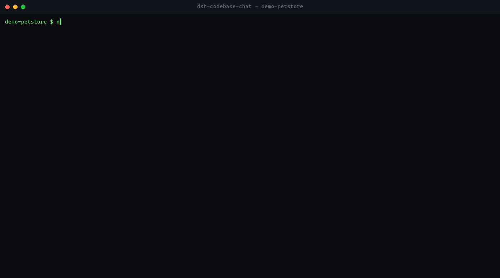

Your codebase,
fully understood.
Chat, search, explain, refactor, audit — and generate board-ready reports. Every claim carries a source citation, a confidence score, and a severity label. Local-first. French & English. Works fully offline.
npx dsh-codebase-chat-mcp setup
one command — auto-detects your IDE and writes the config


Works everywhere you code

real output — no mockups
Start here
What is this, exactly?
In plain words — no jargon required.
Point it at a folder of code on your computer. Ask questions in plain language — "How does login work?", "Is there a hardcoded password?", "What should I fix first?" — in French or English. Every answer cites the exact file and line it came from, so you can verify it in seconds. Nothing is uploaded anywhere.
Point it at a folder
Give it any project on your computer. It reads the code and builds a map of it — nothing is uploaded anywhere.
Ask in plain language
"How does login work?", "Is there a hardcoded password?", "What should I fix first?" — in French or English.
Get answers with receipts
Every answer cites the exact file and line it came from — so you can check it yourself in seconds.
New to some of these words?
- MCP server
- A plug format that lets AI assistants (Claude, Cursor…) use extra tools. Install it once, and your IDE can "see" your code.
- Index
- Like the index at the back of a book — a map of every function and file, so answers are instant instead of reading everything again.
- Prompt-only mode
- The tool prepares the context; your existing AI (Cursor, Claude…) writes the answer. No extra API key, no extra cost.
- Deterministic analysis
- Checks computed directly from your code — same input, same result, every time. No guessing.
- Offline mode
- A small model runs on your machine and answers by itself — no key, no host, no cloud. Handy for quick lookups; bigger models still do the heavy reports.
How it works
From messy code to clear decisions
Four steps — all on your machine, before anything reaches an AI model.
Index
Real AST parsing (Babel + tree-sitter) maps every function, class and import in JS/TS, Python, Go, Rust, Java, C# and PHP — once, then only what changed.
Retrieve
Finds the code that actually matters for your question — nothing more, nothing less.
Prompt
Packs the relevant code into one briefing for the AI — with citations, in French or English.
Decide
You get an answer you can verify — every claim points to [source: file:line].
stylized view of a real pipeline run — nothing leaves the machine
Capabilities
Built for professional code reviews
Not just a chat box — a full intelligence layer over your repository.
Chat & Search
Ask natural questions, find symbols, explain files — every answer cites file and line.
Static Health NEW
Deterministic analysis — circular deps, dead code, duplication, complexity, health score. No LLM needed.
Intelligence Pro
CTO-level brief: architecture, tech radar, debt map, security posture, competitor signals.
Audit & Tasks
Detect TODO/FIXME/any/debugger and generate a sprinted TASKS.md with Before/After patches.
Refactor & Apply
Production-ready refactors applied with backup, dry-run, verification, and rollback.
MCP Compatible
Standalone server for Cursor, Claude, Windsurf, Zed & co — key-free prompt-only, or fully offline via the embedded local model.
Distribution
Two packages, one engine
Same intelligence core — pick the integration that fits your workflow.
dsh-codebase-chat
DeepSeek Harness plugin + CLI
- ✓Codebase Pro panel inside DeepSeek Harness
- ✓Slash commands:
/codebase-intel,/codebase-audit… - ✓Standalone CLI for any project
- ✓Safe apply: backup, dry-run, rollback
- ✓Per-project config —
.codebase-chat.json
dsh-codebase-chat-mcp
Standalone MCP server
- ✓13 tools over stdio — works in Cursor, Claude, Windsurf
- ✓Prompt-only mode — no API key needed, the host model answers
- ✓Optional direct LLM calls via DeepSeek / OpenAI-compatible API
- ✓Local multilingual embeddings for semantic retrieval
- ✓
setupwizard — detects your IDE, picks your answer mode, writes the config - ✓Fully offline — embedded local model answers, no key, no host
Reference
The full tool suite
Every tool is available in DeepSeek Harness and through the MCP server.
| Tool | What it does |
|---|---|
| codebase_chat | Q&A on your project with cited sources |
| codebase_search | Find symbols, terms, and usages across the repo |
| codebase_explain | Explain a file or a symbol — fallback symbol search included |
| codebase_refactor | Propose a concrete refactor with Before/After diff |
| codebase_intelligence | Full CTO brief: architecture, debt, security, roadmap |
| codebase_audit | Tech-debt and non-conformity scan with severity |
| codebase_report | Strategic board report — SWOT, risks, opportunities |
| codebase_ceo | One-page executive brief |
| codebase_tasks | Generate a sprinted TASKS.md action plan |
| codebase_player | UX / playthrough brief from a user's point of view |
| codebase_crea | Creative and marketing angles extracted from the code |
| codebase_health | Deterministic static analysis — cycles, dead code, duplication, complexity, health score. No LLM needed |
| codebase_impact | Deterministic blast radius — which files transitively depend on a target. No LLM needed |
projectPath, lang (fr/en), embed, promptOnly, and localLlm.
See it in action
Real terminal output, no mockups
Every frame is the actual tool running against the bundled demo-project/.
--diff HEAD + live --watch
MCP — real stdio session, 13 tools, no API key
FR — symbol fallback + French prompts
Get started
Install in seconds
Three ways to run it. All read code locally.
MCP server — setup wizard
RECOMMENDEDnpx dsh-codebase-chat-mcp setup
Detects Claude, Cursor, Windsurf, VS Code and writes the config for you — no JSON to edit.
DeepSeek Harness plugin
dsh plugin --profile web add dsh-codebase-chat
From source
git clone https://github.com/shinzarou-eng/dsh-codebase-chat && cd dsh-codebase-chat && pnpm install
Configuration
MCP configuration
Run the setup wizard or paste this block into your IDE's MCP settings. No API key needed — the host model answers, or the embedded local model runs fully offline.
{
"mcpServers": {
"dsh-codebase-chat": {
"command": "npx",
"args": ["dsh-codebase-chat-mcp"]
}
}
}Optional env: DEEPSEEK_API_KEY, OPENAI_API_KEY, CODEBASE_MODEL — direct LLM calls; CODEBASE_LOCAL_LLM — offline mode.
Commands
One command per job
Run them headless in CI or interactively inside DeepSeek Harness.
$ dsh '/codebase-intel' C:\my-app
$ dsh '/codebase-audit' C:\my-app --lang en
$ dsh '/codebase-health' C:\my-app
$ dsh '/codebase-tasks' C:\my-app --apply
$ dsh '/codebase-report' C:\my-app$ npx dsh-codebase-chat --index
$ npx dsh-codebase-chat --search "jwt token"
$ npx dsh-codebase-chat --health # no LLM
$ npx dsh-codebase-chat --file src/auth.ts
$ npx dsh-codebase-chat --ask "explain auth"Trust
Evidence & scoring
Every technical claim, risk, and opportunity is backed by a source citation and scored for confidence and severity.
Auth uses JWT with refresh-token rotation. [source: src/auth.ts:42] Tokens expire after 15 min and live in memory, not localStorage. [source: src/session.ts:18] The refresh endpoint lacks rate limiting — brute-forceable. [source: src/routes/auth.ts:67] [Severity: High]
- ✓Embedded local LLM — fully offline answers
- ✓Watch mode — hot index while you code
- ✓Setup wizard +
.codebase-chat.json - ✓Diff-aware retrieval on changed files
- →GitHub Issues export from TASKS.md
- →Prompt packs — ES, DE, PT
- →VS Code extension — sidebar + inline explain
- →HTTP/SSE transport for the MCP server
- →PR review mode via GitHub API
- →Report export — standalone HTML / PDF
- →Interactive diff viewer in Codebase Pro
- →Multi-repo workspaces
- →Shared team index cache
- →CI bot — audit summaries on every PR
- →Local reranker for tighter context
- →JetBrains & Neovim clients
Questions
FAQ
I'm not a developer — can I still use it?
Yes. Install it, point it at a project folder, and ask questions in plain words. The reports are written for humans — founders, managers, designers and developers — not just for the person who wrote the code.
Does it send my code to the cloud?
No. Indexing, retrieval, and prompt building all run on your machine. In prompt-only or local-model mode, nothing leaves your machine at all — the host model reads the assembled context, or the embedded model answers locally.
Do I need an API key?
No — three ways to get an answer: the host model (promptOnly, best quality), a DEEPSEEK_API_KEY/OPENAI_API_KEY for direct calls, or the embedded local model (localLlm) for fully offline answers. The local model is small — great for quick lookups, prefer a hosted model for full reports. Inside DeepSeek Harness, the plugin uses your configured model.
Can I use it with Claude, Cursor, or Windsurf?
Yes. Install dsh-codebase-chat-mcp and add it to your MCP server config — see the configuration block above.
Does it work without DeepSeek Harness?
Yes. The dsh-codebase-chat-mcp package is fully standalone, and the main package ships a CLI that works on any project.
Which languages are supported?
French and English out of the box via the lang parameter on every tool and command. Source-side, AST extraction covers JS/TS, Python, Go, Rust, Java, C# and PHP — everything else is still indexed line-wise.
Is applying patches safe?
Yes. Apply workflows support dry-run, create .dsh-backups/ copies before overwriting, enforce protected paths, and keep all writes inside the selected project.
Ready to understand your codebase?
One install. Twelve tools. Zero cloud upload.